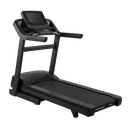

Incline Treadmill Walk
A steady uphill walk on an inclined treadmill belt, keeping one foot in contact with the belt throughout so the glutes and hamstrings work hard with almost no impact.
Full body · Treadmill · Beginner

Muscles worked by the Incline Treadmill Walk
Primary
Secondary
Also called: glute, glutes, gluteus maximus, buttocks, butt, quad.
Equipment

TreadmillAlso called: running machine, walking machine, curved treadmill, manual treadmill.
How to do the Incline Treadmill Walk
- Start the belt at a slow walking speed and step on, then raise the incline to your target gradient.
- Walk with a long, deliberate stride, rolling from heel to toe and pushing the belt away behind you with each step.
- Stand tall and lean from the ankles with the hill rather than folding forward at the waist.
- Keep at least one foot on the belt at all times — walk the hill, do not break into a jog.
- Let your arms swing naturally, or rest them lightly on the rails for balance without carrying your weight on them.
- Hold the gradient for the desired time, then lower the incline and walk level for a few minutes to finish.
Form tips
- Pick a speed you can still walk at. As soon as you need a flight phase to keep up, drop the speed or the incline — it is a walk, not a run.
- Hanging your bodyweight off the handrails removes most of the work the hill is there to create; touch them for balance only.
- The steep grade is what moves the effort from the quads into the glutes and hamstrings, so raise the incline before you raise the speed.
At a glance
| Body part | Full body |
|---|---|
| Category | Cardio |
| Force type | Dynamic |
| Mechanic | Compound |
| Difficulty | Beginner |
| Equipment | Treadmill |
| Goals | Endurance |
| Tags | Full body, Conditioning, Warm up, Knee safe, Lower back safe |
| MET | 8.0 (metabolic equivalent, for calorie estimates) |
| Unilateral | No |
| Bodyweight | No |
| Dataset id | incline-treadmill-walk |
Incline Treadmill Walk in German & Spanish
| German | Laufband-Gehen mit Steigung |
|---|---|
| Spanish | Caminata en Cinta Inclinada |
Descriptions, instructions and tips ship in all three languages in the JSON.
Related exercises
Exercise data (JSON)
The record below is exactly what exercises.json ships for this exercise — names, descriptions, instructions and tips in English, German and Spanish.
{
"id": "incline-treadmill-walk",
"name_en": "Incline Treadmill Walk",
"name_de": "Laufband-Gehen mit Steigung",
"name_es": "Caminata en Cinta Inclinada",
"description_en": "A steady uphill walk on an inclined treadmill belt, keeping one foot in contact with the belt throughout so the glutes and hamstrings work hard with almost no impact.",
"description_de": "Ein gleichmäßiger Bergaufgang auf dem geneigten Laufband, bei dem durchgehend ein Fuß Kontakt zum Band hält — Gesäß und Beinrückseite arbeiten hart, fast ohne Stoßbelastung.",
"description_es": "Una caminata cuesta arriba sostenida sobre una cinta inclinada, manteniendo siempre un pie en contacto con la banda para que glúteos e isquiotibiales trabajen duro casi sin impacto.",
"category": "cardio",
"force_type": "dynamic",
"mechanic": "compound",
"difficulty": "beginner",
"equipment": "treadmill",
"body_part": "full_body",
"primary_muscles": [
"gluteus_maximus",
"quadriceps"
],
"secondary_muscles": [
"gastrocnemius",
"hamstrings",
"soleus"
],
"goals": [
"endurance"
],
"tags": [
"full_body",
"conditioning",
"warm_up",
"knee_safe",
"lower_back_safe"
],
"is_unilateral": false,
"is_bodyweight": false,
"instructions_en": [
"Start the belt at a slow walking speed and step on, then raise the incline to your target gradient.",
"Walk with a long, deliberate stride, rolling from heel to toe and pushing the belt away behind you with each step.",
"Stand tall and lean from the ankles with the hill rather than folding forward at the waist.",
"Keep at least one foot on the belt at all times — walk the hill, do not break into a jog.",
"Let your arms swing naturally, or rest them lightly on the rails for balance without carrying your weight on them.",
"Hold the gradient for the desired time, then lower the incline and walk level for a few minutes to finish."
],
"instructions_de": [
"Starte das Band im langsamen Gehtempo, tritt auf und stell dann die Steigung auf den gewünschten Wert.",
"Geh mit langem, bewusstem Schritt, roll von der Ferse zum Ballen ab und schieb das Band mit jedem Schritt nach hinten weg.",
"Bleib aufrecht und lehn dich aus den Sprunggelenken in den Berg, statt in der Hüfte nach vorn einzuknicken.",
"Halt jederzeit mindestens einen Fuß auf dem Band — geh den Berg, verfall nicht in einen Trab.",
"Lass die Arme natürlich pendeln oder leg sie zum Gleichgewicht locker auf die Griffe, ohne dein Gewicht darauf abzustützen.",
"Halt die Steigung für die gewünschte Zeit, senk sie dann ab und geh zum Abschluss ein paar Minuten in der Ebene."
],
"instructions_es": [
"Arranca la banda a velocidad de caminata lenta, súbete y luego eleva la inclinación hasta la pendiente que buscas.",
"Camina con una zancada larga y deliberada, rodando del talón a la punta y empujando la banda hacia atrás en cada paso.",
"Mantente erguido e inclínate hacia la cuesta desde los tobillos, sin doblarte hacia delante por la cintura.",
"Mantén al menos un pie sobre la banda en todo momento — camina la cuesta, no la trotes.",
"Deja que los brazos se balanceen con naturalidad o apóyalos suavemente en los raíles para equilibrarte, sin descargar el peso en ellos.",
"Sostén la pendiente durante el tiempo deseado, luego bájala y camina en llano unos minutos para terminar."
],
"tips_en": [
"Pick a speed you can still walk at. As soon as you need a flight phase to keep up, drop the speed or the incline — it is a walk, not a run.",
"Hanging your bodyweight off the handrails removes most of the work the hill is there to create; touch them for balance only.",
"The steep grade is what moves the effort from the quads into the glutes and hamstrings, so raise the incline before you raise the speed."
],
"tips_de": [
"Wähl ein Tempo, bei dem du noch gehen kannst. Sobald du eine Flugphase brauchst, um mitzukommen, nimm Geschwindigkeit oder Steigung heraus — es ist ein Gang, kein Lauf.",
"Wer sein Körpergewicht an den Haltegriffen abhängt, nimmt genau die Arbeit heraus, für die die Steigung da ist; berühr sie nur zum Gleichgewicht.",
"Erst der steile Anstieg verlagert die Arbeit aus dem Oberschenkel in Gesäß und Beinrückseite — erhöh also die Steigung, bevor du das Tempo erhöhst."
],
"tips_es": [
"Elige una velocidad a la que todavía puedas caminar. En cuanto necesites una fase de vuelo para seguir el ritmo, baja la velocidad o la inclinación — es una caminata, no una carrera.",
"Colgar el peso del cuerpo de los pasamanos elimina casi todo el trabajo que la cuesta está ahí para generar; tócalos solo para equilibrarte.",
"Es la pendiente pronunciada la que traslada el esfuerzo del cuádriceps a glúteos e isquiotibiales, así que sube la inclinación antes que la velocidad."
],
"met": 8.0,
"images": {
"flat": {
"main": "images/flat/incline-treadmill-walk-main.webp"
}
}
}Fetch just this exercise
const { exercises } = await fetch(
"https://exercise-dataset.com/exercises.json"
).then(r => r.json());
const ex = exercises.find(e => e.id === "incline-treadmill-walk");Free for personal and commercial in-app use with attribution (“Exercise data by RepDB”) — see the license and ready-made attribution snippets. Redistributing the data as a dataset or API is not permitted.